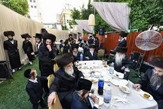
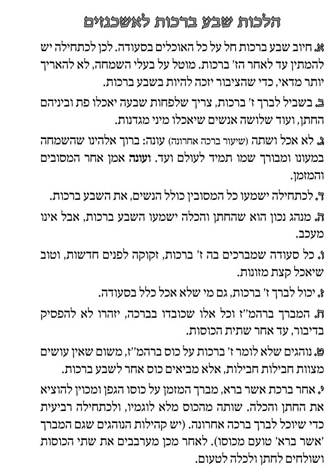

שאלות
מי חייב בשבע ברכות: החתן, הכלה, או המסובים?
מדוע בעלי השמחה צריכים להשתדל שלא להאריך בסעודה?
כמה אנשים צריכים לאכול ומה בשביל לברך שבע ברכות?
מי שלא אכל ושתה מה עונה?
האם החתן והכלה חיבים לשמוע שבע ברכות?
האם אפשר שיברך שבע ברכות מי שלא אכל?
עד מתי ראוי שלא ידבר המזמן והמברכים על הכוס?
מדוע נהגו להביא שתי כוסות לשבע ברכות?
מי יברך את ברכת הגפן בסוף השבע ברכות?
כמה צריך לשתות מהכוס?

תשובות
כל האוכלים בסעודה.
כדי שהציבור יזכה לשבע ברכות.
שבעה פת ושלושה גם מזונות.
ברוך אלוקינו שהשמחה במעונו ומבורך שמו תמיד לעולם ועד.
אינם חיבים, אבל מנהג טוב.
אפשר.
עד אחר שתית הכוסות.
אין עושים מצוות חבילות חבילות, לכן נוהגים להביא כוס לכל מצווה, כוס לברהמ''ז וכוס לשבע ברכות.
את ברכת הגפן מברך המזמן.
מלא לוגמיו, ולכתחילה רביעית כדי שיוכל לברך ברכה אחרונה.
